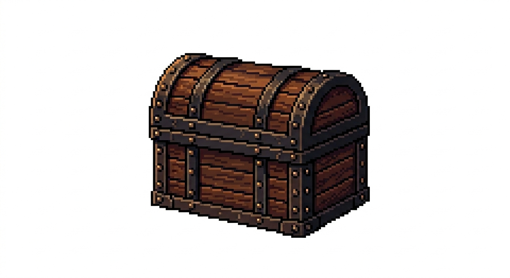

Pronto para relaxar?
Clique no botão abaixo para liberar o acesso ao jogo (Requer verificação de idade).
🔒 Templo Bloqueado
Confirme sua idade clicando em "Jogar Agora".
Loja Fofa: O Empório dos Gatinhos 🐾
Troque os Peixinhos Azuis que você coletou nas fases por vídeos relaxantes de gatinhos! Cada caixa custa 6 peixinhos.

Gatinho 1
Gatinho 2
Gatinho 3
Sobre o Jogo: Um Refúgio Digital
Nyan Cat: Em Busca do Templo não é apenas um jogo de plataforma, é um pequeno refúgio projetado para aliviar o estresse do dia a dia. Pensando em quem lida com a correria de estudos e trabalho, criamos uma experiência cozy (aconchegante), onde a punição por errar é mínima.
Você assume o controle do lendário Nyan Cat! Com controles simples e responsivos, sua missão é explorar cenários em bela Pixel Art. O objetivo é atravessar os obstáculos e coletar os deliciosos Peixinhos Azuis, que servem de moeda para você mimar os gatos na nossa Loja Fofa!
Explorando o Mundo de Nyan
A jornada do nosso herói felino é dividida em ambientes únicos. Conheça as fases:
🌳 Fase 1: Campos Verdes
O início da aventura funciona como um grande jardim de treinamento. O Nyan Cat corre livremente por um gramado verdejante sob um céu azul claro. Os obstáculos aqui são simples: pilhas de caixas de madeira que exigem pulos precisos. O nível termina ao alcançar o grande Castelo de Caixas.
🗿 Fase 2: Templo Maia Felino
Saindo do campo aberto, Nyan Cat encontra as ruínas escuras de um antigo Templo Maia. No centro, um Peixe Especial. Ao coletar essa relíquia, o templo começa a desabar levemente! Você precisará usar seus reflexos para pular pelos destroços e escapar a tempo.
A Voz da Comunidade Felina
Você achou a fuga do Templo Maia muito difícil? Sentiu falta de alguma roupinha na loja? Deixe seu feedback abaixo! Nós lemos todas as mensagens.